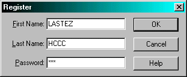

CRACK DE GOLDWAVE
Bon le logiciel sert a mixer du son, voila.
Frustré de pas etre arrivé a la fin de mon téléchargement de mjstudio
(défis de french cracking force) je me rabats sur ce soft.
Bon comme d'hab les outils :
softice
w32dasm
éditeur hexa
alors avec ce prog on peut s'enregistrer par sérial. On va pas se gener.
C'est dans option -> register :

Bon on fait ctrl+d (o voila softice) et on ecrit :
bpx getwindowtexta
c'est un breakpoint qui break lors du "loadage" de chaines de caractères.
Puis on fait Ok et softice apparait.
On fait 2 fois F5 car il y a 2 autres chaines a loader.
Ensuite on observe et on traque l'ennemi (je suis en plein trip :-)
On fait F12 jusqu'a etre dans le prog et on trace comme un chacal avec F10.
Le prog nous rebalance dans kernel donc on refait F12 jusqu'a revenir.
puis on continue a tracer comme un chacal jusqu'a l'apparition de
"bad password fuck you". La on clique ok et softice resurgit nous montrant
le call qui nous a mené sur le message.
voici le code :
0042d3ec call fuck
j'ai la flemme de rechercher, c'est juste un call situé a l'adresse 0042d3ec.
Maintenant qu'on a cette adresse on le finit avec w32dasm.
voila sous w32dasm.
(faites goto -> code location -> 0042d3ec)
.......
:0042D3C1 5E pop esi
:0042D3C2 50 push eax
:0042D3C3 E83CF8FFFF call 0042CC04 <-verif du serial
:0042D3C8 59 pop ecx
:0042D3C9 84C0 test al, al
:0042D3CB 0F85A1000000 jne 0042D472 <-petit petit...
* Possible StringData Ref from Data Obj ->"Register"
|
:0042D3D1 8B1560BB4D00 mov edx, dword ptr [004DBB60]
:0042D3D7 8B4E66 mov ecx, dword ptr [esi+66]
:0042D3DA 8B01 mov eax, dword ptr [ecx]
:0042D3DC 6A30 push 00000030
:0042D3DE 52 push edx
* Possible StringData Ref from Data Obj ->"Invalid registration! Please "
->"check your password and try again."
|
:0042D3DF 6852C54D00 push 004DC552
:0042D3E4 8B500C mov edx, dword ptr [eax+0C]
:0042D3E7 52 push edx
:0042D3E8 8B4868 mov ecx, dword ptr [eax+68]
:0042D3EB 51 push ecx
:0042D3EC E8958F0500 call 00486386 <- on arrive ici avec si
:0042D3F1 836F1C05 sub dword ptr [edi+1C], 00000005
.......
voila ou le jne nous emmene :
......
* Referenced by a (U)nconditional or (C)onditional Jump at Address:
|:0042D3CB(C)
|
:0042D472 8D8594FEFFFF lea eax, dword ptr [ebp+FFFFFE94]
:0042D478 50 push eax
:0042D479 E886F7FFFF call 0042CC04 <-verif du serial
:0042D47E 59 pop ecx
:0042D47F 84C0 test al, al
:0042D481 0F84AB000000 je 0042D532
:0042D487 66C747106800 mov [edi+10], 0068
* Possible StringData Ref from Data Obj ->"goldwave.ini"
|
:0042D48D 8B1564724E00 mov edx, dword ptr [004E7264]
:0042D493 52 push edx
* Possible StringData Ref from Data Obj ->"Register"
.........
bon vous avez vu le call 0042CC04 c'est la procédure de verif du sérial.
Et si le sérial est bon on le reteste plus bas (pour les vilains crackers).
Notre mission est de tromper le test. On voit un test al,al juste après le
call suivit d'un saut. ça veut dire que AL doit valoir 1 en sortie de call
pour être register.(de plus ce call est appelé en début de prog).
On va donc reprendre SI et se placer sur le call (faites comme tout a l'heure
et tracez avec F10 jusqu'a être sur la ligne voulue).
Ensuite tapez F8 pour rentrer dans le call et approchez vous du ret (retour du call)
Voila ce que ça donne :
.......
TEST EAX,EAX
SETZ AL
AND EAX,01
POP EDI
POP ESI
POP EBX
MOV ESP,EBP
POP EBP
RET
.......
on a un test eax,eax qui fait qu'on touche a AL ou pas.
Beh on va tout virer.
Pour le remplacer par :
MOV AL,01
soit en hexa : (code on pour voir l'hexa sous softice):
e888730a0085c00f94c083e0015f5e5b //(TEST EAX,EAX SETZ AL) e888730a00 et 83e0015f5e5b sont
^^^^^^^^^^ les octets avant et apres ce que l'on veut patcher pour
être sur de tomber sur les bons.
en
e888730a00b00190909083e0015f5e5b //(MOV AL,1 et on complete ce qui reste avec des nop(90))
^^^^^^^^^^
recherchez ça avec votre éditeur hexa changez le et relancez le prog.
ça marche.Le prog est cracked.
Comme quoi cette méthode a du bon
Voila, si vous avez des questions, ou autre chose contactez moi:
hccc@caramail.com
www.multimania.com/hccc
TiPiaX